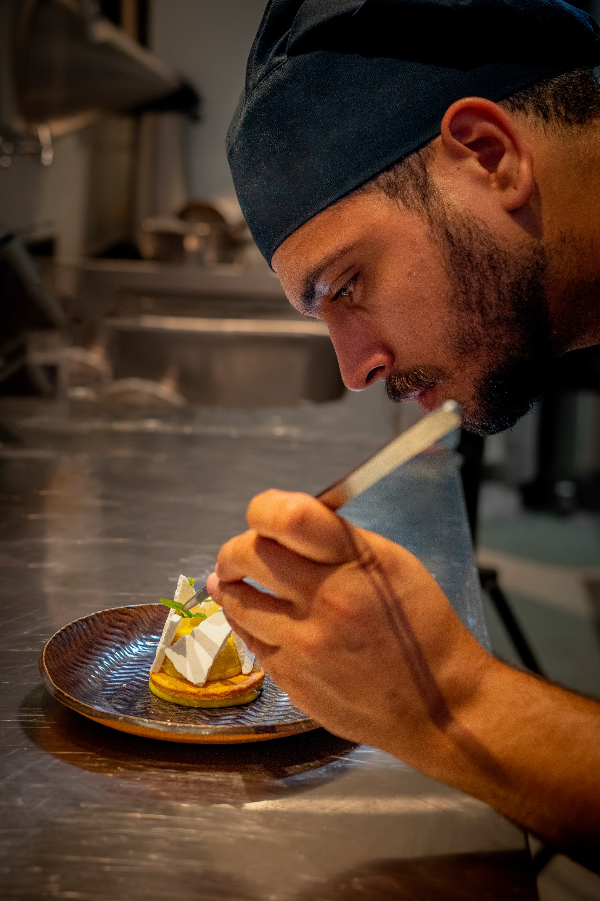
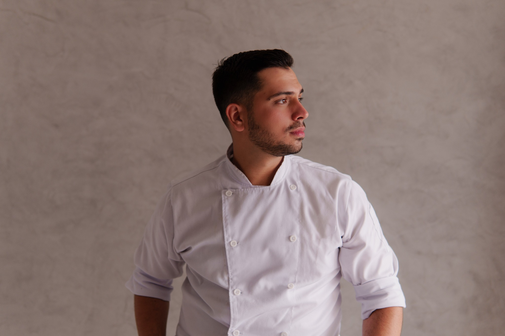
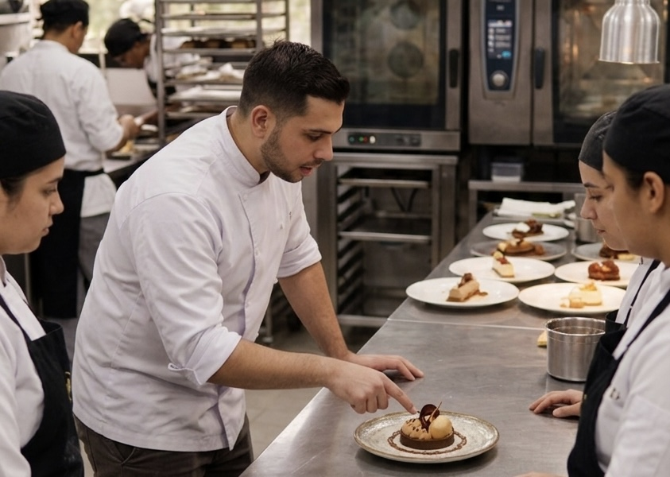
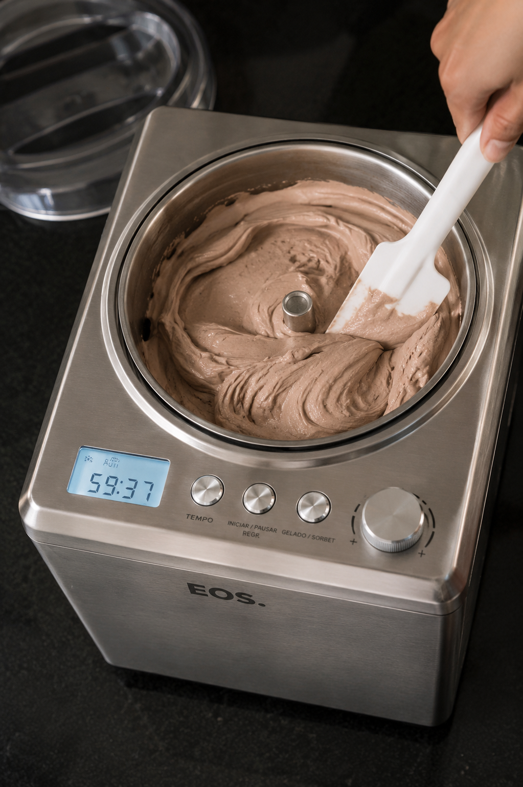

Desenvolvimento de equipe
Treinamento técnico e operacional para que o staff execute com segurança, padrão e autonomia.
Consultoria para restaurantes Fine Dining
Processos, equipes e resultados construídos a partir da experiência em cozinhas de alto padrão.


Sobre o Chef
Natan Montenegro construiu sua trajetória em resorts, restaurantes Fine Dining e operações gastronômicas de alto padrão.
Sua consultoria desenvolve equipes, estrutura processos e transforma a confeitaria em uma área mais consistente, eficiente e lucrativa dentro do restaurante.
Método
Uma atuação objetiva para elevar a entrega da equipe sem perder a identidade da casa.
Treinamento técnico e operacional para que o staff execute com segurança, padrão e autonomia.
Fichas, fluxos, mise en place e rotinas desenhadas para reduzir falhas e desperdício.
Mais controle de insumos, previsibilidade produtiva e uma confeitaria alinhada ao lucro.
Na prática
A proposta não é apontar erros de fora. É entrar na operação, observar o potencial do time e construir processos que funcionam na rotina real do restaurante.
Solicitar diagnóstico

Vídeo institucional
Mais do que sobremesas, construímos operações consistentes, eficientes e lucrativas.
Pronto para elevar sua confeitaria?
Vamos transformar equipe, processos e resultados com uma consultoria construída para restaurantes que exigem padrão, consistência e excelência.
Entrar em contato